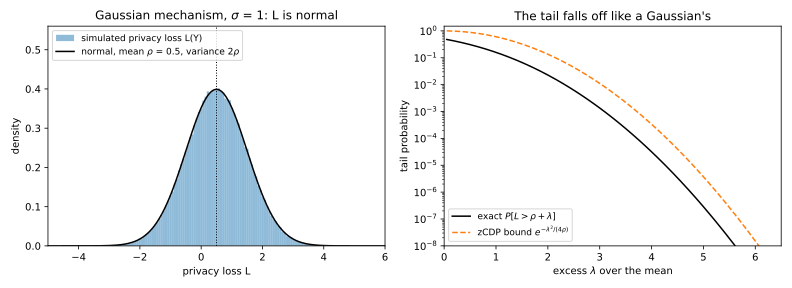
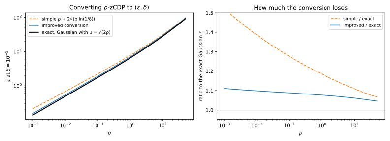
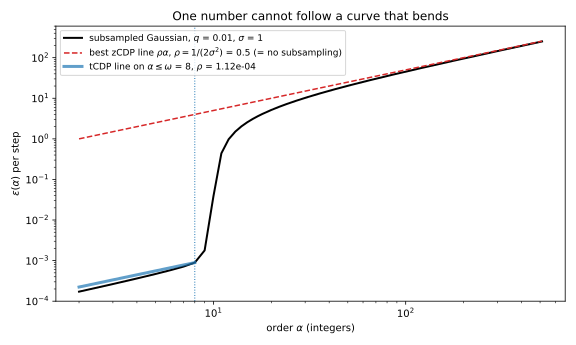

31 Concentrated differential privacy
The first chapter of this part describes a mechanism by a whole curve. Take two neighbouring datasets \(D \sim D'\), which differ by adding or removing one record. At each order \(\alpha > 1\), the Rényi differential privacy (RDP) curve \(\varepsilon(\alpha)\) is the largest Rényi divergence \(D_\alpha\) between the output distributions \(M(D)\) and \(M(D')\) over all such pairs. For the Gaussian mechanism, which adds normal noise of standard deviation \(\sigma\) to a query that one record moves by at most 1, the curve is the line \(\alpha/(2\sigma^2)\), fixed by its slope. This chapter asks when one number can stand for the whole curve, and what that number buys.
The answer is zero-concentrated differential privacy (zCDP), the most widely used form of concentrated differential privacy (CDP). A mechanism is \(\rho\)-zCDP when its RDP curve lies under the line \(\rho\alpha\). RDP curves add under composition, and lines through the origin add to a line, so composition adds the parameters. Every section asks how well a line fits the curve. It fits the Gaussian exactly. A pure differential privacy (DP) mechanism has a curve that flattens at \(\varepsilon\), because no Rényi divergence exceeds its largest log-ratio of probabilities, so a line fits it only near \(\alpha = 1\). For the subsampled Gaussian of differentially private stochastic gradient descent (SGD), DP-SGD for short, the line fits so badly that zCDP throws away everything subsampling gained. Truncated CDP repairs this by asking for the line only on small orders.
Two running examples carry the chapter. The first is one Gaussian step with \(\sigma = 1\), which is \(0.5\)-zCDP; at \(\delta = 10^{-5}\) its exact \(\varepsilon\) is \(4.377\), and zCDP reports \(4.728\). The second is a DP-SGD run of \(T = 10{,}000\) steps, each on a random sample that includes each record with probability \(q = 0.01\), with \(\sigma = 1\). At the same \(\delta\), RDP accounting puts that run at \(\varepsilon = 6.719\), while zCDP reports \(5475.8\).
31.1 The definition of zCDP
You add Gaussian noise to a count, a mean or a gradient, again and again, and you want one number that says how much privacy you have spent so far. Bun and Steinke (2016) turned the Gaussian’s straight RDP curve into a definition: describe a mechanism by the slope of a line that lies above its RDP curve.
Definition 31.1 (Zero-concentrated differential privacy) A mechanism \(M\) is \(\rho\)-zCDP if, for all neighbouring datasets \(D \sim D'\) and all orders \(\alpha > 1\), \[D_\alpha\big(M(D)\,\|\,M(D')\big) \le \rho\alpha. \tag{31.1}\]
The name comes from what the definition says about the privacy loss: it is concentrated around its mean like a normal variable, and “zero” says the line has no intercept. Fix a neighbouring pair and write \(P = M(D)\) and \(Q = M(D')\), with \(P(y)\) and \(Q(y)\) their probabilities or densities at an output \(y\). Capital letters are used because \(q\) is the sampling rate later in this chapter. The privacy loss \(L(y) = \ln(P(y)/Q(y))\) says how much more likely \(y\) is under \(D\) than under \(D'\), and drawing \(y\) from \(P\) makes it a random variable \(L\). Divergences shows that the Rényi divergence is a rescaled logarithm of the moment generating function (MGF) of this loss (Equation 3.13): \[(\alpha - 1)D_\alpha(P\|Q) = \ln\mathbb E_P\big[e^{(\alpha - 1)L}\big]. \tag{31.2}\] So zCDP bounds every exponential moment of the loss, and exponential moments control how often the loss is large.
Proposition 31.1 (The moment and tail form) If \(M\) is \(\rho\)-zCDP, then for every neighbouring pair the privacy loss \(L\) satisfies \[\ln\mathbb E\big[e^{(\alpha - 1)L}\big] \le (\alpha - 1)\alpha\rho \quad\text{for all } \alpha > 1, \tag{31.3}\] and its upper tail falls off like a normal tail around \(\rho\): \[\Pr[L > \rho + t] \le e^{-t^2/(4\rho)} \quad\text{for all } t > 0. \tag{31.4}\]
Proof.
- The moment form. Multiply Equation 31.1 by \(\alpha - 1\), which is positive, so the inequality keeps its direction. By Equation 31.2 the left side becomes \(\ln\mathbb E[e^{(\alpha - 1)L}]\), which gives Equation 31.3.
- A tail bound at each order. The positive variable \(e^{(\alpha - 1)L}\) is large exactly when \(L\) is, so the Chernoff bound (Theorem 2.3) applies Markov’s inequality to it. For any level \(\tau\), it gives \[\Pr[L > \tau] \le \mathbb E\big[e^{(\alpha - 1)L}\big]e^{-(\alpha - 1)\tau}, \tag{31.5}\] which Equation 31.3 bounds by \(e^{(\alpha - 1)(\alpha\rho - \tau)}\).
- The best order. Use the order that gives the smallest bound. Put \(\tau = \rho + t\) and write \(\lambda = \alpha - 1\), so that \(\alpha\rho - \tau = \lambda\rho - t\). The exponent becomes \(\lambda^2\rho - \lambda t\), a parabola in \(\lambda\) whose smallest value, at \(\lambda = t/(2\rho)\), is \(-t^2/(4\rho)\).
Three properties make the definition useful, and each is inherited from a property of the Rényi divergence.
Theorem 31.1 (The Gaussian mechanism, composition and post-processing)
- The Gaussian mechanism, which adds \(\mathcal N(0, \sigma^2 I_d)\) noise to a query \(f\) with \(\ell_2\) sensitivity \(\Delta_2 f\), is \(\rho\)-zCDP with \(\rho = (\Delta_2 f)^2/(2\sigma^2)\). With the part’s noise multiplier, which measures \(\sigma\) in units of the sensitivity, \(\rho = 1/(2\sigma^2)\).
- If \(M_1\) is \(\rho_1\)-zCDP and \(M_2\) is \(\rho_2\)-zCDP, possibly chosen after seeing the output of \(M_1\), the pair is \((\rho_1 + \rho_2)\)-zCDP.
- Any function of the output of a \(\rho\)-zCDP mechanism is \(\rho\)-zCDP.
Proof.
- The Gaussian. For two normal distributions with the same variance \(\sigma^2\), \(D_\alpha\) is \(\alpha\) times the squared distance between the means, divided by \(2\sigma^2\) (Equation 3.19). This holds in any dimension, because rotating the coordinates so that the means differ along one axis leaves the other axes identical under both, and identical independent coordinates add nothing (additivity in Theorem 3.2). On neighbours the distance is at most \(\Delta_2 f\), which gives the claimed \(\rho\).
- Composition. The RDP curves of an adaptive composition add (Rényi DP), so the pair’s curve is at most \(\rho_1\alpha + \rho_2\alpha\), a line of slope \(\rho_1 + \rho_2\).
- Post-processing. The Rényi divergence obeys the data-processing inequality (Theorem 3.5), so passing the output through any function cannot raise the curve.
For the Gaussian the definition holds with equality in every moment. Its privacy loss is normal with mean \(\rho\) and variance \(2\rho\) (Lemma 20.3), and the logarithm of the MGF of that normal at \(\lambda = \alpha - 1\) is \(\lambda\rho + \lambda^2\rho = (\alpha - 1)\alpha\rho\). So a \(\rho\)-zCDP mechanism is one whose privacy loss is, in every exponential moment, no worse than \(\mathcal N(\rho, 2\rho)\). For other mechanisms the smallest valid \(\rho\) is the largest ratio \(\varepsilon(\alpha)/\alpha\), the rest of the curve is forgotten, and the later sections measure that cost.
The tail bound Equation 31.4 is loose only by a polynomial factor. For the Gaussian the exact tail is a standard normal tail at \(z = t/\sqrt{2\rho}\), while the bound is \(e^{-z^2/2}\). The Mills ratio of Concentration says that a normal tail at \(z\) is about \(e^{-z^2/2}/(z\sqrt{2\pi})\), so the exact tail divided by the bound is about \(1/(z\sqrt{2\pi}) = \sqrt{\rho/\pi}/t\).
Example 31.1 One Gaussian step with \(\sigma = 1\) is \(0.5\)-zCDP, and ten of them are \(5\)-zCDP. A million simulated privacy losses (seed 0) have mean \(0.4990\) and variance \(1.0013\), against \(\rho = 0.5\) and \(2\rho = 1\). Their \(\ln\mathbb E[e^L]\) is \(1.0000\), against \((\alpha - 1)\alpha\rho = 1\) at \(\alpha = 2\). Table 31.1 compares the tail with its bound. At \(t = 4\) their ratio is \(0.094\), against \(\sqrt{0.5/\pi}/4 = 0.100\) from the Mills ratio.
| \(t\) | Exact \(\Pr[L > \rho + t]\) | Simulated | zCDP bound \(e^{-t^2/(4\rho)}\) |
|---|---|---|---|
| 1 | \(1.587 \times 10^{-1}\) | \(1.586 \times 10^{-1}\) | \(6.065 \times 10^{-1}\) |
| 2 | \(2.275 \times 10^{-2}\) | \(2.261 \times 10^{-2}\) | \(1.353 \times 10^{-1}\) |
| 4 | \(3.167 \times 10^{-5}\) | \(2.700 \times 10^{-5}\) | \(3.355 \times 10^{-4}\) |

31.2 Pure DP implies zCDP
A real pipeline mixes Gaussian steps with \(\varepsilon\)-DP ones, such as a Laplace count, a randomized-response survey bit or an exponential-mechanism selection. To put them in one budget, you need their \(\rho\). The privacy loss of such a mechanism lies in \([-\varepsilon, \varepsilon]\), and a bounded variable has Gaussian-like tails, so \(\rho\) should be of order \(\varepsilon^2\). The question is the constant.
The tool is Hoeffding’s lemma from Concentration (Lemma 2.2). A variable \(X\) confined to an interval of length \(w\) has an MGF no larger than that of a normal variable with the same mean and variance \(w^2/4\): \[\ln\mathbb E\big[e^{\lambda X}\big] \le \lambda\mathbb E[X] + \frac{\lambda^2w^2}{8} \quad\text{for every real } \lambda. \tag{31.6}\] Applied once to bound the mean of the loss and once to bound its exponential moments, it gives the constant \(\frac12\).
Theorem 31.2 (Pure DP implies zCDP) If \(M\) is \(\varepsilon\)-DP, then \(M\) is \((\varepsilon^2/2)\)-zCDP (Bun & Steinke 2016, Proposition 1.4), and its RDP curve lies under both the line and the cap \(\varepsilon\): \[\varepsilon(\alpha) \le \min\Big(\varepsilon,\ \frac{\alpha\varepsilon^2}{2}\Big). \tag{31.7}\]
Proof. The plan is to bound the mean of the loss with Hoeffding’s lemma, then its exponential moments with the same lemma, and add the two. The cap comes separately.
- The loss is bounded. Pure DP holds output by output (Proposition 18.1), so \(\varepsilon\)-DP for both orders of the pair gives \(e^{-\varepsilon} \le P(y)/Q(y) \le e^\varepsilon\) wherever either probability is positive. So \(L \in [-\varepsilon, \varepsilon]\), and \(P\) and \(Q\) have the same support.
- The mean is at most \(\varepsilon^2/2\). Apply Hoeffding’s lemma to \(X = -L\), which lies in an interval of length \(2\varepsilon\), with \(\lambda = 1\): \[\ln\mathbb E_P\big[e^{-L}\big] \le -\mathbb E_P[L] + \frac{\varepsilon^2}{2}. \tag{31.8}\] The left side is 0, because \(e^{-L} = Q(Y)/P(Y)\) averages to 1 under \(P\) when the supports agree (Lemma 3.2). So \(\mathbb E_P[L] \le \varepsilon^2/2\).
- The exponential moments. Apply the lemma again, now to \(L\) itself with \(\lambda = \alpha - 1\): \[\ln\mathbb E_P\big[e^{(\alpha - 1)L}\big] \le (\alpha - 1)\mathbb E_P[L] + \frac{(\alpha - 1)^2\varepsilon^2}{2}. \tag{31.9}\]
- Combine. Putting the mean bound of step 2 into step 3 bounds the right side by \((\alpha - 1)\varepsilon^2/2 + (\alpha - 1)^2\varepsilon^2/2 = (\alpha - 1)\alpha\,\varepsilon^2/2\). By Equation 31.2, that is \(D_\alpha \le \alpha\varepsilon^2/2\).
- The cap. \(D_\alpha\) is non-decreasing in \(\alpha\) and tends to the max-divergence \(D_\infty\), the largest log-ratio of probabilities over events (Theorem 3.2). \(\varepsilon\)-DP bounds that log-ratio by \(\varepsilon\).
Hoeffding treats the loss as an arbitrary bounded variable. A sharper route uses the fact that randomized response, which reports a bit truthfully with probability \(e^\varepsilon/(1 + e^\varepsilon)\) and flips it otherwise, is the worst \(\varepsilon\)-DP mechanism: every other one is a post-processing of it. Its MGF is a ratio of hyperbolic cosines, and step 3 of the proof below bounds it with one inequality: \(\ln\cosh x\) is a concave function of \(x^2\), so it lies below its tangent.
Lemma 31.1 (A tangent bound for ln cosh) For every \(a > 0\) and every real \(x\), \[\ln\cosh x - \ln\cosh a \le (x^2 - a^2)\frac{\tanh a}{2a}. \tag{31.10}\]
Proof.
- Change variable. Let \(h(s) = \ln\cosh\sqrt s\) for \(s \ge 0\), so that the claim is \(h(x^2) - h(a^2) \le (x^2 - a^2)h'(a^2)\). By the chain rule, \(h'(s) = \tanh(\sqrt s)/(2\sqrt s)\), which at \(s = a^2\) is \(\tanh(a)/(2a)\).
- The derivative decreases. The function \(\tanh(y)/y\) decreases for \(y > 0\), because its derivative has the sign of \(y - \sinh y\cosh y\), which is negative. So \(h'\) decreases, and \(h\) is concave.
- Tangent line. A concave function lies below each of its tangent lines, and the claim is the tangent at \(s = a^2\).
Theorem 31.3 (The sharp constant) Every \(\varepsilon\)-DP mechanism is \(\varepsilon\tanh(\varepsilon/2)\)-zCDP: \[\varepsilon(\alpha) \le \alpha\,\varepsilon\tanh(\varepsilon/2). \tag{31.11}\] No smaller \(\rho\) holds for randomized response. More generally, the exact RDP curve of randomized response is a valid RDP curve for every \(\varepsilon\)-DP mechanism.
Proof. The plan is to reduce every \(\varepsilon\)-DP pair to randomized response, compute its MGF exactly, bound it with Lemma 31.1, and show that the bound is reached as \(\alpha \to 1\).
- Reduce to randomized response. Let \(P^\star\) and \(Q^\star\) be the output distributions of randomized response on the bits 0 and 1. Every \(\varepsilon\)-DP pair is a post-processing of them: there is a channel \(K\) with \(P = P^\star K\) and \(Q = Q^\star K\) (Theorem 21.2 with \(\delta = 0\)). By the data-processing inequality (Theorem 3.5), \(D_\alpha(P\|Q) \le D_\alpha(P^\star\|Q^\star)\) at every order, which is the last claim.
- The MGF of randomized response. Under \(P^\star\) the truthful answer has probability \(p = e^\varepsilon/(1 + e^\varepsilon)\) and likelihood ratio \(p/(1 - p) = e^\varepsilon\). So the loss is \(+\varepsilon\) with probability \(p\) and \(-\varepsilon\) otherwise. With \(\lambda = \alpha - 1\), averaging \(e^{\lambda L}\) over the two values gives \[\mathbb E\big[e^{\lambda L}\big] = \frac{e^{(\lambda + 1)\varepsilon} + e^{-\lambda\varepsilon}}{1 + e^\varepsilon}. \tag{31.12}\] Factoring \(e^{\varepsilon/2}\) out of the numerator and the denominator turns each into twice a hyperbolic cosine: \[\mathbb E\big[e^{\lambda L}\big] = \frac{\cosh\big((\lambda + \frac12)\varepsilon\big)}{\cosh(\varepsilon/2)}. \tag{31.13}\]
- Bound it. Take \(x = (\lambda + \frac12)\varepsilon\) and \(a = \varepsilon/2\) in Lemma 31.1. Then \(x^2 - a^2 = \varepsilon^2\lambda(\lambda + 1)\) and \(\tanh(a)/(2a) = \tanh(\varepsilon/2)/\varepsilon\), so \[\ln\mathbb E\big[e^{\lambda L}\big] \le (\alpha - 1)\alpha\,\varepsilon\tanh(\varepsilon/2). \tag{31.14}\] By Equation 31.2 and step 1, this gives Equation 31.11.
- No smaller \(\rho\). As \(\alpha \to 1\), any RDP curve tends to the Kullback–Leibler (KL) divergence, the mean loss (Theorem 3.2). For randomized response that mean is \(\varepsilon(2p - 1) = \varepsilon(e^\varepsilon - 1)/(e^\varepsilon + 1) = \varepsilon\tanh(\varepsilon/2)\). So \(\varepsilon(\alpha)/\alpha\) tends to \(\varepsilon\tanh(\varepsilon/2)\), and any smaller slope fails near \(\alpha = 1\).
Since \(\tanh x \le x\), the sharp constant is below \(\varepsilon^2/2\), and the two agree as \(\varepsilon \to 0\). At \(\varepsilon = 0.5\) the sharp \(\rho\) is \(0.1225\) against \(0.1250\), and at \(\varepsilon = 1\) it is \(0.4621\) against \(0.5000\). Mechanisms other than randomized response can need less: the Laplace mechanism needs \(0.3679\) at \(\varepsilon = 1\).
Any line fits poorly far from \(\alpha = 1\), because the true curve flattens at the cap (Figure 31.2). At \(\varepsilon = 1\) the line \(\alpha\varepsilon^2/2\) crosses the cap at \(\alpha = 2\), and at \(\varepsilon = 3\) its slope \(4.5\) puts it above the cap at every order. Since every \(\varepsilon\)-DP pair is a post-processing of randomized response, an RDP accountant can instead charge a pure-DP step the curve of randomized response, while a zCDP accountant can keep only a line. For large \(\varepsilon\), as in local DP, account the mechanism by its curve or by \(\varepsilon\), not by a \(\rho\).

The exponential mechanism, which selects one candidate and favours those with higher scores, costs four times less than \(\varepsilon^2/2\). Its privacy loss on a neighbouring pair lies in an interval of length \(\varepsilon\), not \(2\varepsilon\), which is the bounded-range property of Durfee and Rogers (2019). Hoeffding’s lemma then pays a quarter of the variance term.
Proposition 31.2 (Bounded-range mechanisms) If, for every neighbouring pair taken in either order, the privacy loss of \(M\) lies in an interval of length \(\varepsilon\), then \(M\) is \((\varepsilon^2/8)\)-zCDP. An \(\varepsilon\)-DP exponential mechanism has this property, so it is \((\varepsilon^2/8)\)-zCDP (Cesar & Rogers 2021).
Proof.
- The mean. The loss is finite in both orders, so \(P\) and \(Q\) have the same support and \(\mathbb E_P[e^{-L}] = 1\), as in step 2 of Theorem 31.2. Hoeffding’s lemma with length \(\varepsilon\) and \(\lambda = 1\) then gives \(0 \le -\mathbb E_P[L] + \varepsilon^2/8\).
- The exponential moments. The lemma with \(\lambda = \alpha - 1\) adds \((\alpha - 1)^2\varepsilon^2/8\) to \((\alpha - 1)\mathbb E_P[L]\).
- Combine. With step 1 the sum is at most \((\alpha - 1)\alpha\,\varepsilon^2/8\), which by Equation 31.2 is \(D_\alpha \le \alpha\varepsilon^2/8\).
Example 31.2 Randomized response at \(\varepsilon = 1\) reports the truth with probability \(e/(1 + e) = 0.7311\). Table 31.2 compares its exact curve with the bounds. The third column puts the sharp mean bound \(\varepsilon\tanh(1/2) = 0.4621\), which holds for every \(\varepsilon\)-DP pair (Theorem 21.3), into step 4 of the Hoeffding proof in place of \(\varepsilon^2/2\). That line starts lower but keeps the slope \(0.5\), which comes from Hoeffding’s variance term, so it sits \(0.5 - 0.4621 = 0.0379\) below the zCDP line at every order.
| \(\alpha\) | Exact \(\varepsilon(\alpha)\) | \(\varepsilon\tanh(\varepsilon/2) + (\alpha-1)\varepsilon^2/2\) | \(\alpha\varepsilon^2/2\) | \(\min(\varepsilon, \alpha\varepsilon^2/2)\) |
|---|---|---|---|---|
| 1.5 | 0.6273 | 0.7121 | 0.7500 | 0.7500 |
| 2 | 0.7353 | 0.9621 | 1.0000 | 1.0000 |
| 5 | 0.9217 | 2.4621 | 2.5000 | 1.0000 |
| 10 | 0.9652 | 4.9621 | 5.0000 | 1.0000 |
| 50 | 0.9936 | 24.9621 | 25.0000 | 1.0000 |
Up to \(\alpha = 2\) the zCDP line is within 36% of the exact value (\(1.0000/0.7353 = 1.360\)). At \(\alpha = 50\) it is 25 times too large (\(25.0000/0.9936 = 25.2\)), while the cap is within 1% (\(1.0000/0.9936 = 1.0064\)).
31.3 From zCDP to (ε, δ)
Whatever you account in, you report \((\varepsilon, \delta)\). Mironov’s conversion turns an RDP curve into such a guarantee (From Rényi DP to (ε, δ) and to tests). At each order \(\alpha\), a mechanism with curve value \(\varepsilon(\alpha)\) is \((\varepsilon(\alpha) + \ln(1/\delta)/(\alpha - 1), \delta)\)-DP, and you take the best order. The improved conversion of the same chapter avoids part of the slack of Markov’s inequality, and subtracts \(\ln(\alpha)/(\alpha - 1) - \ln(1 - 1/\alpha)\) from this. For a \(\rho\)-zCDP mechanism the curve is the line \(\rho\alpha\), so the best order can be found by hand. Section D.4 in the appendices derives the result from scratch, with worked numbers.
Theorem 31.4 (From zCDP to (ε, δ)) A \(\rho\)-zCDP mechanism is \((\varepsilon, \delta)\)-DP for every \(\delta \in (0, 1)\) with \[\varepsilon = \rho + 2\sqrt{\rho\ln(1/\delta)}, \tag{31.15}\] reached at the order \(\alpha^* = 1 + \sqrt{\ln(1/\delta)/\rho}\) (Bun & Steinke 2016, Proposition 1.3). It is also \((\varepsilon, \delta)\)-DP with the smaller value \[\varepsilon = \min_{\alpha > 1}\left[\rho\alpha + \frac{\ln(1/\delta)}{\alpha - 1} + \ln\Big(1 - \frac1\alpha\Big) - \frac{\ln\alpha}{\alpha - 1}\right] \tag{31.16}\] (Canonne, Kamath & Steinke 2020, Proposition 12 and Corollary 13).
Proof. Write \(\ell = \ln(1/\delta)\).
- Plug in the line. Mironov’s conversion with \(\varepsilon(\alpha) = \rho\alpha\) says that every \(\alpha > 1\) gives a valid \(\varepsilon\): \[g(\alpha) = \rho\alpha + \frac{\ell}{\alpha - 1}. \tag{31.17}\] The first term grows with the order and the second shrinks, so the best order lies in between.
- Minimize. The derivative \(\rho - \ell/(\alpha - 1)^2\) is zero at \(\alpha - 1 = \sqrt{\ell/\rho}\). Both terms of \(g\) are convex for \(\alpha > 1\), so this stationary point is the minimum.
- Evaluate. At \(\alpha^*\) the first term is \(\rho + \sqrt{\rho\ell}\) and the second is \(\ell/\sqrt{\ell/\rho} = \sqrt{\rho\ell}\), and their sum is Equation 31.15.
- The improved form. Putting \(\varepsilon(\alpha) = \rho\alpha\) into the improved conversion gives the bracket of Equation 31.16 at each order, and every order is valid.
For calibration you need the reverse: the largest \(\rho\) whose conversion stays within a target \(\varepsilon\) at a given \(\delta\). The simple \(\varepsilon\) grows with \(\rho\), and solving Equation 31.15 for \(\rho\) shows that the target is met by every \[\rho \le \Big(\sqrt{\varepsilon + \ln(1/\delta)} - \sqrt{\ln(1/\delta)}\Big)^2. \tag{31.18}\] Keep budgets in \(\rho\) and convert once, at the end: \(\varepsilon\) grows like the square root of \(\rho\), so adding the \(\varepsilon\)’s of two halves of a budget overstates the whole.
How much do the conversions lose? The Gaussian answers this, because the zCDP line is exact for it, so any gap is the price of the conversion alone. After dividing by \(\sigma\), a \(\rho\)-zCDP Gaussian mechanism is the pair \(\mathcal N(0, 1)\) against \(\mathcal N(\mu, 1)\) with \(\mu = \sqrt{2\rho}\), and Theorem 20.3 gives its exact smallest \(\delta\) at each \(\varepsilon\) (Equation 20.17). At \(\rho = 0.5\) the simple formula is 21% too large (\(5.299/4.377 = 1.210\)), and the improved conversion 8% (\(4.728/4.377 = 1.080\)), and both gaps shrink as \(\rho\) grows (Figure 31.3). The part’s accountants minimize over a fixed list of orders, ORDERS, and the improved conversion on that list agrees with a fine grid to within \(0.001\) for \(\rho \le 1\).

Example 31.3 \(k\) Gaussian steps with \(\sigma = 1\) are \((k/2)\)-zCDP, since each costs \(\frac12\) and composition adds. Table 31.3 converts a range of \(\rho\) at \(\delta = 10^{-5}\), where \(\ln(1/\delta) = 11.5129\). The row \(\rho = 0.5\) is the single step of the running example. Its best order for the simple formula is \(\alpha^* = 1 + \sqrt{11.5129/0.5} = 5.799\), and the simple \(\varepsilon\) is \(0.5 + 2\sqrt{0.5 \times 11.5129} = 5.299\). The row \(\rho = 5\) is ten steps, and \(\rho = 50\) a hundred.
ORDERS, and the exact \(\varepsilon\) of the Gaussian mechanism with the same \(\rho\).
| \(\rho\) | \(\mu = \sqrt{2\rho}\) | Simple Equation 31.15 | Improved, fine grid | Improved, ORDERS |
Exact Gaussian |
|---|---|---|---|---|---|
| 0.01 | 0.1414 | 0.689 | 0.546 | 0.546 | 0.497 |
| 0.1 | 0.4472 | 2.246 | 1.914 | 1.914 | 1.760 |
| 0.5 | 1.0000 | 5.299 | 4.728 | 4.729 | 4.377 |
| 1 | 1.4142 | 7.786 | 7.077 | 7.077 | 6.573 |
| 5 | 3.1623 | 20.174 | 19.047 | 19.054 | 17.857 |
| 50 | 10.0000 | 97.985 | 96.035 | 96.116 | 91.817 |
To make a single Gaussian step \((1, 10^{-5})\)-DP through Equation 31.18, take \(\rho = (\sqrt{12.5129} - \sqrt{11.5129})^2 = 0.02082\), that is \(\sigma = 1/\sqrt{2\rho} = 4.901\).
31.4 Group privacy
A household or a user with many records contributes several records at once. Group privacy asks how the guarantee degrades for datasets joined by a chain of \(m\) neighbouring steps, writing \(m\) because \(k\) counts composed mechanisms. For pure DP the answer is \(m\varepsilon\) (Theorem 19.2). For RDP the chain needs a triangle inequality, which the Rényi divergence lacks at a fixed order, so Mironov’s group bound gives up orders: for a group of \(2^c\), a curve value \(\varepsilon\) at order \(\alpha\) becomes \(3^c\varepsilon\) at order \(\alpha/2^c\) (Rényi DP). zCDP constrains every order at once, so it can pay for the chain with higher orders.
The proof walks along the chain one record at a time. Each step must pass from \(P\) to \(Q\) through an intermediate distribution \(R\), and the tool is a triangle-like inequality that pays for the detour with higher orders on the two legs (Bun & Steinke 2016, Lemma 5.2).
Lemma 31.2 (A triangle-like inequality for Rényi divergence) For distributions \(P\), \(Q\), \(R\), every order \(\alpha > 1\) and every \(m > 1\), \[D_\alpha(P\|Q) \le \frac{m\alpha}{m\alpha - 1}D_{\frac{m\alpha - 1}{m - 1}}(P\|R) + D_{m\alpha}(R\|Q). \tag{31.19}\]
Proof. The plan is to write the sum that defines \(D_\alpha(P\|Q)\) as an average under \(R\) of a product of two ratios, split the product with Hölder’s inequality, and recognize each factor as a Rényi divergence of one leg.
- Insert \(R\). Assume \(R\) is positive wherever \(P\) or \(Q\) is, since otherwise the right side is infinite. Multiplying out one term shows \(R \cdot P^\alpha R^{-\alpha} \cdot R^{\alpha - 1}Q^{1 - \alpha} = P^\alpha Q^{1 - \alpha}\). So the sum that defines the divergence is an average under \(R\) (Lemma 3.2), with the ratios evaluated at an output drawn from \(R\): \[e^{(\alpha - 1)D_\alpha(P\|Q)} = \sum_y P(y)^\alpha Q(y)^{1 - \alpha} = \mathbb E_R\big[(P/R)^\alpha(R/Q)^{\alpha - 1}\big]. \tag{31.20}\]
- Split with Hölder. Hölder’s inequality bounds the average of a product of two positive variables \(X_1\) and \(X_2\) by a product of power means, for exponents \(u\) and \(v\) with \(\frac1u + \frac1v = 1\): \[\mathbb E[X_1X_2] \le (\mathbb E[X_1^u])^{1/u}(\mathbb E[X_2^v])^{1/v}. \tag{31.21}\] The second average will be a divergence of order \(v(\alpha - 1) + 1\), so choose \(v = \frac{m\alpha - 1}{\alpha - 1}\) to make that order \(m\alpha\), and the matching \(u = \frac{m\alpha - 1}{\alpha(m - 1)}\). Then \[\mathbb E_R\big[(P/R)^\alpha(R/Q)^{\alpha - 1}\big] \le \big(\mathbb E_R[(P/R)^{u\alpha}]\big)^{1/u}\big(\mathbb E_R[(R/Q)^{v(\alpha - 1)}]\big)^{1/v}. \tag{31.22}\]
- Recognize two divergences. Write \(\alpha_1 = u\alpha = \frac{m\alpha - 1}{m - 1}\) and \(\alpha_2 = v(\alpha - 1) + 1 = m\alpha\). Multiplying out as in step 1, the first average is \(\sum_y R^{1 - \alpha_1}P^{\alpha_1} = e^{(\alpha_1 - 1)D_{\alpha_1}(P\|R)}\), and the second is \(\sum_y R^{\alpha_2}Q^{1 - \alpha_2} = e^{(\alpha_2 - 1)D_{\alpha_2}(R\|Q)}\).
- Take logarithms and divide by \(\alpha - 1\). The second leg contributes \(D_{m\alpha}(R\|Q)\), since \((\alpha_2 - 1)/v = \alpha - 1\). The first contributes \(D_{\alpha_1}(P\|R)\) times \(\frac{\alpha_1 - 1}{u(\alpha - 1)}\). Since \(\alpha_1 - 1 = \frac{m(\alpha - 1)}{m - 1}\), that coefficient is \(\frac{m\alpha}{m\alpha - 1}\), which gives Equation 31.19.
Theorem 31.5 (Group privacy) If \(M\) is \(\rho\)-zCDP and \(D\), \(D'\) are joined by a chain of \(m\) neighbouring steps, then for every \(\alpha > 1\) \[D_\alpha\big(M(D)\,\|\,M(D')\big) \le m^2\rho\,\alpha, \tag{31.23}\] so \(M\) is \(m^2\rho\)-zCDP for groups of size \(m\) (Bun & Steinke 2016, Proposition 1.9). The Gaussian mechanism attains the bound.
Proof. The proof is by induction on \(m\), and the case \(m = 1\) is the definition.
- Split the chain. Let \(\hat D\) be \(m - 1\) steps from \(D\) and one step from \(D'\). Apply Equation 31.19 with \(P = M(D)\), \(R = M(\hat D)\) and \(Q = M(D')\).
- The group of \(m - 1\). By the induction hypothesis at order \(\alpha_1 = \frac{m\alpha - 1}{m - 1}\), the first term is at most \(\frac{m\alpha}{m\alpha - 1}(m - 1)^2\rho\,\alpha_1 = m(m - 1)\rho\alpha\). The factor \(m\alpha - 1\) in \(\alpha_1\) cancels the coefficient’s denominator.
- The last step. The second term is a single neighbouring step, so \(\rho\)-zCDP at order \(m\alpha\) bounds it by \(m\rho\alpha\). The sum is \((m^2 - m + m)\rho\alpha = m^2\rho\alpha\).
- Tightness. For the Gaussian mechanism a group of \(m\) shifts the mean by \(m\Delta_2 f\), so Equation 3.19 gives exactly \(\alpha m^2(\Delta_2 f)^2/(2\sigma^2) = m^2\rho\alpha\).
The bound is quadratic in \(m\), which matches pure DP: with \(\rho \approx \varepsilon^2/2\), the group’s \(m^2\rho\) is about \((m\varepsilon)^2/2\). The RDP route multiplies \(\varepsilon\) by \(3^c\) while dividing the order by \(2^c\), so its slope is \(6^c\rho\) instead of \(m^2\rho = 4^c\rho\) (Table 31.4). The induction can raise the order at each step only because zCDP controls every order; a bound known only up to some order would run out.
Strong group privacy is also a weakness. Bun and Steinke use it to prove lower bounds on the sample size of zCDP algorithms as strong as those for pure DP. These rule out stability-based algorithms, which release an exact answer when the data are far from any dataset where it would change, and Section 31.5 weakens the definition to escape them.
Example 31.4 Table 31.4 takes the Gaussian mechanism with \(\sigma = 1\) (\(\rho = 0.5\)) and groups of size \(m\). The RDP route starts from a high order, 64, where \(\varepsilon(64) = 0.5 \times 64 = 32\). For \(m = 2^c\) it gives order \(64/2^c\), \(\varepsilon = 3^c \times 32\) and slope \(6^c \times 0.5\). The triangle-like inequality is an equality along the chain of normals with means 0, 1 and 2, where both sides of Equation 31.19 are 6 at \(\alpha = 3\) and \(m = 2\).
| Group size \(m\) | zCDP \(m^2\rho\) | \(\varepsilon\) at \(10^{-5}\) (improved) | Exact Gaussian, shift \(m\) | RDP route: order, \(\varepsilon\), slope |
|---|---|---|---|---|
| 1 | 0.5 | 4.728 | 4.377 | — |
| 2 | 2 | 10.725 | 9.997 | 32, 96, 3 |
| 4 | 8 | 25.919 | 24.382 | 16, 288, 18 |
| 8 | 32 | 68.616 | 65.319 | 8, 864, 108 |
31.5 Approximate zCDP
Some useful mechanisms are \((\varepsilon, \delta)\)-DP but not zCDP at all. Propose-test-release and stability-based histograms are of this kind: they fail with probability about \(\delta\). The lower bounds of Section 31.4 rule them out of zCDP, yet you still want them in one budget with Gaussian steps. Bun and Steinke’s answer is to let zCDP fail on an event of small probability.
Definition 31.2 (Approximate zCDP) A mechanism \(M\) is \(\delta\)-approximately \(\rho\)-zCDP if, for all neighbours \(D \sim D'\), there are events \(E\) and \(E'\) of probability at least \(1 - \delta\), for the runs on \(D\) and on \(D'\), such that for every \(\alpha > 1\) \[D_\alpha\big(M(D)|_E\,\|\,M(D')|_{E'}\big) \le \rho\alpha \quad\text{and}\quad D_\alpha\big(M(D')|_{E'}\,\|\,M(D)|_E\big) \le \rho\alpha. \tag{31.24}\] Here \(M(D)|_E\) is the output distribution conditioned on \(E\), and the events may depend on the mechanism’s internal randomness, not only on its output (Bun & Steinke 2016, Definition 1.12).
Three properties make it a ledger with two columns, \(\rho\) and the probability \(\delta_a\) that zCDP fails.
Proposition 31.3 (The approximate zCDP ledger)
- An \((\varepsilon, \delta)\)-DP mechanism is \(\delta\)-approximately \((\varepsilon^2/2)\)-zCDP (Bun & Steinke 2016, Proposition 1.13 and Corollary 8.7).
- A \(\delta_1\)-approximately \(\rho_1\)-zCDP step followed by a \(\delta_2\)-approximately \(\rho_2\)-zCDP step is \((\delta_1 + \delta_2 - \delta_1\delta_2)\)-approximately \((\rho_1 + \rho_2)\)-zCDP (their Lemma 8.2). For many steps the failure probability is \(1 - \prod_i(1 - \delta_i) \le \sum_i\delta_i\).
- A \(\delta_a\)-approximately \(\rho\)-zCDP mechanism is \((\varepsilon, \delta_a + (1 - \delta_a)\delta')\)-DP, where \(\varepsilon\) is any conversion of \(\rho\)-zCDP at \(\delta'\) (their Lemma 8.8).
Proof. The first two parts have short reasons. For the third, the usual conversion applies on the good event, and the bad event can add at most its probability.
- Absorbing \((\varepsilon, \delta)\)-DP. Any \((\varepsilon, \delta)\)-DP pair behaves, with probability \(1 - \delta\), like an \(\varepsilon\)-DP pair, which Theorem 31.2 turns into \(\varepsilon^2/2\). Section J.2 in the appendices derives the decomposition and the composition of mixed pipelines.
- Composition. The conditioned mechanisms compose as zCDP (Theorem 31.1), and both good events hold with probability at least \((1 - \delta_1)(1 - \delta_2) = 1 - (\delta_1 + \delta_2 - \delta_1\delta_2)\).
- Split on the event. Let \(\Pr[E], \Pr[E'] \ge 1 - \delta_a\), fix a set \(S\) of outputs, and write \(P_E(S) = \Pr[M(D) \in S \mid E]\). The probability of \(S\) outside \(E\) is at most 1, so \[\Pr[M(D) \in S] \le P_E(S)\Pr[E] + 1 - \Pr[E] = 1 - \Pr[E](1 - P_E(S)). \tag{31.25}\] This bound shrinks as \(\Pr[E]\) grows, so it is at most its value \(P_E(S)(1 - \delta_a) + \delta_a\) at the smallest allowed \(\Pr[E]\).
- Use the conditional zCDP. The conditioned pair is \(\rho\)-zCDP, so \(P_E(S) \le e^\varepsilon\Pr[M(D') \in S \mid E'] + \delta'\).
- Remove the conditioning on \(D'\). Dropping the outputs outside \(E'\) can only lower a probability, so \(\Pr[M(D') \in S] \ge (1 - \delta_a)\Pr[M(D') \in S \mid E']\).
- Combine. Putting step 4 into step 3 and using step 5 gives \[\Pr[M(D) \in S] \le e^\varepsilon\Pr[M(D') \in S] + (1 - \delta_a)\delta' + \delta_a. \tag{31.26}\]
The \(\rho\) column composes like zCDP, so after conversion \(\varepsilon\) grows like the square root of the number of steps, while the \(\delta_a\) column adds up like \(\delta\) in basic composition. The ledger is worth keeping only when some steps are genuinely \((\varepsilon, \delta)\)-DP and not zCDP.
Example 31.5 A pipeline runs 10 stability-based steps, each \((0.5, 10^{-7})\)-DP, and 10 Gaussian steps with \(\sigma = 1\). Each stability step enters the \(\rho\) column as \(0.5^2/2 = 0.125\) and the \(\delta_a\) column as \(10^{-7}\). The totals are \(\rho = 10 \times 0.125 + 10 \times 0.5 = 6.25\) and \(\delta_a = 1 - (1 - 10^{-7})^{10} = 1.0000 \times 10^{-6}\). The improved conversion at \(\delta' = 10^{-5} - \delta_a\) gives \(\varepsilon = 22.100\), with total \(\delta_a + (1 - \delta_a)\delta' \le 10^{-5}\). Without the ledger you would convert the Gaussians alone to \(\varepsilon = 19.119\) at the remaining \(\delta = 10^{-5} - 10^{-6} = 9 \times 10^{-6}\) and add the stability steps by basic composition, for \(19.119 + 5 = 24.119\). The ledger saves about 2, because each \(\varepsilon = 0.5\) step costs \(\varepsilon^2/2\) in \(\rho\), not \(\varepsilon\).
31.6 Subsampling, and truncated CDP
DP-SGD, the running example of this part, runs each step on a Poisson sample of the data, in which each record is used independently with probability \(q\), the sampling rate. Subsampling makes a step much more private than the Gaussian it contains, because a record is usually not in the batch. This section asks whether zCDP sees that gain, and what to do when it does not.
Take add/remove neighbours, sensitivity 1 and noise multiplier \(\sigma\), in one dimension, which is enough because only the shift along the record’s direction carries evidence. Without the record the step outputs \(Q = \mathcal N(0, \sigma^2)\). With it, the record is in the sample with probability \(q\), shifting the mean by 1, so the output is the mixture \(P = (1 - q)\mathcal N(0, \sigma^2) + q\,\mathcal N(1, \sigma^2)\). The RDP curve is \(D_\alpha(P\|Q)\), because the other order is never larger (Amplification by subsampling, Equation 33.17; Section L.1). On integer orders it has a closed form. The divergence averages a product of \(\alpha\) likelihood ratios, as if the step ran \(\alpha\) times, and the term \(j\) below collects the runs in which the record was sampled \(j\) times.
Lemma 31.3 (The subsampled Gaussian on integer orders) For every integer \(\alpha \ge 2\), the curve is a binomial sum: \[\varepsilon(\alpha) = \frac{1}{\alpha - 1}\ln A_\alpha, \qquad A_\alpha = \sum_{j=0}^{\alpha}\binom\alpha j(1 - q)^{\alpha - j}q^j\exp\Big(\frac{j^2 - j}{2\sigma^2}\Big) \tag{31.27}\] (Mironov, Talwar & Zhang 2019).
Proof.
- Write the ratio. Let \(r\) be the likelihood ratio of \(\mathcal N(1, \sigma^2)\) to \(Q\). Then \(P/Q = 1 - q + q\,r\), and writing the divergence as an average under \(Q\) of the ratio to the power \(\alpha\) (Proposition 3.1) gives \(A_\alpha = e^{(\alpha - 1)D_\alpha(P\|Q)} = \mathbb E_Q[(1 - q + q\,r)^\alpha]\).
- Expand. For integer \(\alpha\), the binomial theorem expands the power into the terms \(\binom\alpha j(1 - q)^{\alpha - j}q^j\,\mathbb E_Q[r^j]\).
- Each moment. By the same form of Proposition 3.1, \(\mathbb E_Q[r^j] = e^{(j - 1)D_j}\) for the two normals, and Equation 3.19 gives \(D_j = j/(2\sigma^2)\), so the moment is \(e^{(j^2 - j)/(2\sigma^2)}\).
Proposition 31.4 (No amplification for zCDP) For the Poisson-subsampled Gaussian with any \(q \in (0, 1]\), the smallest \(\rho\) with \(\varepsilon(\alpha) \le \rho\alpha\) for all \(\alpha > 1\) is \(1/(2\sigma^2)\), the same as without subsampling. On integer orders the curve obeys \[\varepsilon(\alpha) \ge \frac{\alpha}{2\sigma^2} + \frac{\alpha\ln q}{\alpha - 1}. \tag{31.28}\]
Proof. Write \(\rho_0 = 1/(2\sigma^2)\) for the slope without subsampling. The plan is to show that \(\rho_0\) is enough, because subsampling never hurts, and that nothing smaller is enough, because at large orders subsampling stops helping.
- Upper bound, by convexity. The ratio \(1 - q + q\,r\) is an average of 1 and \(r\), and \(x \mapsto x^\alpha\) is convex, so the \(\alpha\)-th power of that average is at most \((1 - q) + q\,r^\alpha\). Averaging under \(Q\), with \(\mathbb E_Q[r^\alpha] = e^{(\alpha - 1)\alpha\rho_0}\) from the Gaussian curve, gives \[A_\alpha \le 1 - q + q\,e^{(\alpha - 1)\alpha\rho_0}. \tag{31.29}\] An average of 1 and a number at least 1 is at most that number, so \(A_\alpha \le e^{(\alpha - 1)\alpha\rho_0}\), that is \(D_\alpha(P\|Q) \le \rho_0\alpha\).
- The other order. zCDP needs both orders of the pair, so \(D_\alpha(Q\|P)\) needs the same bound. The sum \(\sum_y V(y)(U(y)/V(y))^\alpha\) is jointly convex in the pair of distributions \((U, V)\): its value at a mixture of pairs is at most the mixture of its values (Section F.5 proves it). Writing \((Q, P)\) as the mixture \((1 - q)(Q, Q) + q\,(Q, \mathcal N(1, \sigma^2))\), and using the Gaussian curve for the second pair, gives the same bound.
- Lower bound, by one term. Every term of Equation 31.27 is positive, so keeping only \(j = \alpha\), the runs in which the record was always sampled, gives \(A_\alpha \ge q^\alpha e^{(\alpha^2 - \alpha)\rho_0}\). Taking logarithms and dividing by \(\alpha - 1\) gives Equation 31.28.
- Let the order grow. Dividing Equation 31.28 by \(\alpha\) gives \(\varepsilon(\alpha)/\alpha \ge \rho_0 + \ln q/(\alpha - 1)\), which tends to \(\rho_0\), because the penalty for a rarely sampled record, \(\ln q/(\alpha - 1)\), vanishes as the order grows. So a line above the whole curve needs \(\rho \ge \rho_0\), and step 1 shows that \(\rho_0\) suffices.
The curve bends, and a line cannot (Figure 31.4). For \(q = 0.01\) and \(\sigma = 1\), the curve up to \(\alpha = 8\) is tiny and almost linear, with slope close to \(q^2(e^{1/\sigma^2} - 1)/2 = 8.5914 \times 10^{-5}\). Expanding \((1 + q(r - 1))^\alpha\) in powers of \(q\) instead, the linear term averages to 0, so \(A_\alpha - 1\) starts with \(\binom\alpha2 q^2(e^{1/\sigma^2} - 1)\), and dividing its logarithm by \(\alpha - 1\) gives that slope. Between \(\alpha = 8\) and \(\alpha = 16\) the curve jumps by more than three orders of magnitude, and beyond that it follows Equation 31.28, which turns positive at \(\alpha = 1 + 2\sigma^2\ln(1/q) = 10.21\). A line above the whole curve needs the slope \(\rho_0 = 0.5\). A line that only has to clear the curve up to \(\alpha = 8\) can have slope \(1.1171 \times 10^{-4}\), which is \(4476\) times smaller.
Only the small orders matter for DP-SGD. After \(T\) steps the curve \(T\varepsilon(\alpha)\) stays small up to the bend, while the conversion’s term \(\ln(1/\delta)/(\alpha - 1)\) falls with the order, so Mironov’s and the improved conversion both pick an order just below the bend, \(\alpha = 4\) on the integer orders of ORDERS. The large orders that set the zCDP slope are never used.

Definition 31.3 (Truncated concentrated differential privacy) A mechanism is \((\rho, \omega)\)-tCDP if, for all neighbours \(D \sim D'\) and all orders \(\alpha \in (1, \omega)\) below the cut-off \(\omega > 1\), \[D_\alpha\big(M(D)\,\|\,M(D')\big) \le \rho\alpha \tag{31.30}\] (Bun, Dwork, Rothblum & Steinke 2018, Definition 1). Plain zCDP is the case \(\omega = \infty\).
Composition and conversion work as for zCDP, on the covered orders.
Proposition 31.5 (Composition and conversion of tCDP) A \((\rho_1, \omega_1)\)-tCDP step followed by a \((\rho_2, \omega_2)\)-tCDP step is \((\rho_1 + \rho_2, \min(\omega_1, \omega_2))\)-tCDP (their Lemma 2). A \((\rho, \omega)\)-tCDP mechanism is \((\varepsilon, \delta)\)-DP with \[\varepsilon = \begin{cases}\rho + 2\sqrt{\rho\ln(1/\delta)} & \text{if } \ln(1/\delta) \le (\omega - 1)^2\rho,\\[2pt] \rho\omega + \dfrac{\ln(1/\delta)}{\omega - 1} & \text{otherwise}\end{cases} \tag{31.31}\] (their Lemma 6).
Proof.
- Composition. On orders below both cut-offs the two curves add (Rényi DP), and above the smaller cut-off one of them says nothing.
- The endpoint counts. \(D_\alpha\) is non-decreasing and lower semicontinuous in \(\alpha\), so \(D_\omega \le \lim_{\alpha \uparrow \omega}D_\alpha \le \rho\omega\), and Mironov’s conversion may use every order in \((1, \omega]\).
- Constrained minimum. As in Theorem 31.4, the conversion is the convex function \(g(\alpha) = \rho\alpha + \ln(1/\delta)/(\alpha - 1)\). If its minimizer \(\alpha^* = 1 + \sqrt{\ln(1/\delta)/\rho}\) is at most \(\omega\), which is the first condition, it gives Equation 31.15. Otherwise \(g\) decreases on all of \((1, \omega]\), since a convex function decreases before its minimizer, and the best order is \(\omega\).
Unlike zCDP, tCDP is amplified by subsampling, provided the cut-off stays below about \(\ln(1/q)/\rho\). The theorem uses sampling of a fixed size, not the Poisson sampling of DP-SGD, so it is a guide rather than an accountant here.
Theorem 31.6 (Subsampling amplifies tCDP) Let \(\rho, q \in (0, 0.1]\) with \(\ln(1/q) \ge 3\rho(2 + \log_2(1/\rho))\), and let \(M\) be \((\rho, \omega')\)-tCDP with \(\omega' \ge \ln(1/q)/(2\rho) \ge 3\). Running \(M\) on a uniformly random subset of a fraction \(q\) of the records, of fixed size and without replacement, is \((13q^2\rho, \omega)\)-tCDP with \(\omega = \ln(1/q)/(4\rho)\) (Bun, Dwork, Rothblum & Steinke 2018, Theorem 11).
The proof, in Section 3 of that paper, expands the Rényi sum of the two mixtures in powers of \(q\). The second-order term carries the factor \(q^2\), and the higher terms can be controlled only up to orders of about \(\ln(1/q)/\rho\), which is where the cut-off comes from. Because the theorem covers every tCDP mechanism, its constant 13 is generous: with \(\sigma = \sqrt5\) and \(q = 0.01\) its \(\rho\) is about 11 times what the subsampled curve needs.
Example 31.6 Table 31.5 lists the per-step curve of the running DP-SGD example, \(q = 0.01\) and \(\sigma = 1\), on integer orders, which is what Equation 31.27 computes.
| \(\alpha\) | \(\varepsilon(\alpha)\) | \(\varepsilon(\alpha)/\alpha\) | Lower bound Equation 31.28 | No subsampling, \(\alpha/2\) |
|---|---|---|---|---|
| 2 | \(1.7181 \times 10^{-4}\) | \(8.5907 \times 10^{-5}\) | −8.2103 | 1 |
| 4 | \(3.6315 \times 10^{-4}\) | \(9.0789 \times 10^{-5}\) | −4.1402 | 2 |
| 8 | \(8.9364 \times 10^{-4}\) | \(1.1171 \times 10^{-4}\) | −1.2631 | 4 |
| 10 | \(3.8270 \times 10^{-2}\) | \(3.8270 \times 10^{-3}\) | −0.1169 | 5 |
| 12 | \(9.7801 \times 10^{-1}\) | \(8.1501 \times 10^{-2}\) | 0.9762 | 6 |
| 16 | \(3.0879\) | \(1.9299 \times 10^{-1}\) | 3.0878 | 8 |
| 64 | \(2.7322 \times 10^{1}\) | \(4.2690 \times 10^{-1}\) | 27.3217 | 32 |
| 512 | \(2.5139 \times 10^{2}\) | \(4.9099 \times 10^{-1}\) | 251.3858 | 256 |
The steepest ratio on the integer orders of ORDERS is \(0.4910\), at \(\alpha = 512\), but zCDP needs the line at every order, and the ratio tends to \(0.5\). So zCDP must charge \(\rho = 0.5\) per step, as without subsampling. After \(10{,}000\) steps \(\rho = 5000\), and Equation 31.15 gives \(\varepsilon = 5000 + 2\sqrt{5000 \times 11.5129} = 5479.9\) at \(\delta = 10^{-5}\), or \(5475.8\) with the improved conversion. RDP accounting on the integer orders of ORDERS puts the same run at \(\varepsilon = 7.469\) with Mironov’s conversion and \(6.719\) with the improved one, and fractional orders do slightly better (Table 33.6).
Table 31.6 takes the per-step slope on integer orders up to \(\omega\), composes \(10{,}000\) steps by adding the slopes, and converts with Equation 31.31.
| \(\omega\) | \(\rho\) per step | \(\rho\) after \(10^4\) steps | \(\varepsilon\) at \(10^{-5}\) |
|---|---|---|---|
| 2 | \(8.5907 \times 10^{-5}\) | 0.8591 | 13.231 |
| 3 | \(8.8213 \times 10^{-5}\) | 0.8821 | 8.403 |
| 4 | \(9.0789 \times 10^{-5}\) | 0.9079 | 7.469 |
| 5 | \(9.3733 \times 10^{-5}\) | 0.9373 | 7.507 |
| 6 | \(9.7250 \times 10^{-5}\) | 0.9725 | 7.665 |
| 8 | \(1.1171 \times 10^{-4}\) | 1.1171 | 8.289 |
| 10 | \(3.8270 \times 10^{-3}\) | 38.2704 | 80.252 |
| 16 | \(1.9299 \times 10^{-1}\) | 1929.9067 | 2228.027 |
The best integer choice, \(\omega = 4\), reproduces RDP with Mironov’s conversion, \(7.469\). There \(\ln(1/\delta) = 11.51\) exceeds \((\omega - 1)^2\rho = 9 \times 0.9079 = 8.17\), so the second branch of Equation 31.31 applies; the first would give \(7.374\) but needs the order \(4.561\), beyond \(\omega\). A smaller \(\omega\) forbids the orders the conversion needs, and once \(\omega\) passes the bend near \(\alpha = 10\), tCDP collapses towards zCDP.
31.7 Code
The script code/concentrated_dp.py computes every number in this chapter and draws every figure, checking the Gaussian privacy loss by simulation and evaluating the other curves exactly. From the repository root:
uv run python code/part04-privacy-accounting/concentrated_dp.py| Experiment | Result |
|---|---|
| Gaussian privacy loss, \(\sigma = 1\) | Mean 0.4990, variance 1.0013, \(\ln\mathbb E[e^L] = 1.0000\); Table 31.1 |
| Pure DP to zCDP | Smallest \(\rho\) of randomized response 0.1225, 0.4621 at \(\varepsilon\) = 0.5, 1; Table 31.2 |
| Bounded range, \(\varepsilon^2/8\) | Fraction used 0.9965, 0.9864, 0.8348 at \(\varepsilon\) = 0.5, 1, 4 |
| zCDP to \((\varepsilon, 10^{-5})\) | Table 31.3; at \(\rho = 0.5\), 1.210 and 1.080 times the exact 4.377 |
| Group privacy, \(\sigma = 1\) | Table 31.4; triangle-like inequality: both sides 6 |
| Approximate zCDP pipeline | \(\rho = 6.25\), \(\delta_a = 1.0000 \times 10^{-6}\), \(\varepsilon = 22.100\); without it 24.119 |
| DP-SGD, \(T = 10^4\) | zCDP: 5479.9 (simple), 5475.8 (improved); tCDP, \(\omega = 4\): 7.469; RDP: 7.469 (Mironov), 6.719 (improved) |
tests/test_concentrated_dp.py checks that the output still matches.
31.8 Summary
| Result | Statement | Use |
|---|---|---|
| Definition 31.1 | \(D_\alpha \le \rho\alpha\) for every order and every neighbouring pair | Keep budgets in \(\rho\); convert once, at the end |
| Proposition 31.1 | \(\ln\mathbb E[e^{(\alpha-1)L}] \le (\alpha-1)\alpha\rho\); \(\Pr[L > \rho + t] \le e^{-t^2/(4\rho)}\) | The loss is no worse than \(\mathcal N(\rho, 2\rho)\) |
| Theorem 31.1 | Gaussian: \(\rho = (\Delta_2 f)^2/(2\sigma^2)\); \(\rho\)’s add; post-processing is free | \(\sigma = 1\) costs \(\rho = 0.5\), about \(\varepsilon = 4.7\) at \(\delta = 10^{-5}\) |
| Theorem 31.2 | \(\varepsilon\)-DP gives \((\varepsilon^2/2)\)-zCDP, curve \(\le \min(\varepsilon, \alpha\varepsilon^2/2)\) | Pure-DP steps in a zCDP budget; sharp only as \(\varepsilon \to 0\) |
| Theorem 31.3 | \(\varepsilon\)-DP gives \(\varepsilon\tanh(\varepsilon/2)\)-zCDP; curve \(\le\) that of randomized response | For large \(\varepsilon\) any line passes the cap almost at once: keep the RDP curve or \(\varepsilon\) |
| Proposition 31.2 | Bounded range \(\varepsilon\) gives \((\varepsilon^2/8)\)-zCDP | The exponential mechanism; nearly tight |
| Theorem 31.4 | \(\varepsilon = \rho + 2\sqrt{\rho\ln(1/\delta)}\), or the improved minimum over orders | Report with the improved one; calibrate by Equation 31.18 |
| Lemma 31.2 | A triangle inequality for \(D_\alpha\), paid for with orders \(\frac{m\alpha-1}{m-1}\) and \(m\alpha\) | Walking a chain of datasets |
| Theorem 31.5 | Groups of \(m\): \(m^2\rho\) | Users with several records; exact for the Gaussian |
| Proposition 31.3 | \((\varepsilon, \delta)\)-DP gives \(\delta\)-approximate \((\varepsilon^2/2)\)-zCDP; \(\rho\) and \(\delta_a\) add | Pipelines with stability-based steps |
| Lemma 31.3 | Subsampled Gaussian on integer orders: a binomial sum | Exact per-step curve of DP-SGD |
| Proposition 31.4 | Smallest \(\rho = 1/(2\sigma^2)\) for every \(q\) | Never account a subsampled mechanism in zCDP |
| Proposition 31.5 | \((\sum\rho_i, \min\omega_i)\); convert by Equation 31.31 | One number for DP-SGD with a small \(\omega\); matches RDP on the running example |
| Theorem 31.6 | Sampling a fraction \(q\) gives \((13q^2\rho, \ln(1/q)/(4\rho))\)-tCDP | Generic but loose; prefer RDP |
31.9 References
- Bun & Steinke, “Concentrated Differential Privacy: Simplifications, Extensions, and Lower Bounds” (TCC 2016; arXiv:1605.02065). The source for this chapter: the definition (1.1), the Gaussian (1.6), pure DP to zCDP (1.4, proved as 3.3), conversion (1.3, 3.5, 3.6), group privacy (1.9, 5.3), approximate zCDP (1.12, Section 8), and the lower bounds. Read Sections 1–3 first.
- Dwork & Rothblum, “Concentrated Differential Privacy” (2016, arXiv:1603.01887). The original two-parameter definition and its motivation from advanced composition.
- Bun, Dwork, Rothblum & Steinke, “Composable and Versatile Privacy via Truncated CDP” (STOC 2018). Truncated CDP: definition, composition, conversion (Lemma 6), amplification by subsampling (Theorem 11) and the sinh-normal mechanism.
- Canonne, Kamath & Steinke, “The Discrete Gaussian for Differential Privacy” (NeurIPS 2020). The discrete Gaussian and its zCDP guarantee, and the improved conversion from RDP and zCDP to \((\varepsilon, \delta)\) (Proposition 12, Corollary 13), with a numerically stable way to compute it.
- Cesar & Rogers, “Bounding, Concentrating, and Truncating: Unifying Privacy Loss Composition for Data Analytics” (Algorithmic Learning Theory 2021). Composition of pure DP, bounded-range (exponential mechanism) and CDP steps in one analysis, including the \(\varepsilon^2/8\) bound for bounded-range mechanisms.
- Durfee & Rogers, “Practical Differentially Private Top-k Selection with Pay-what-you-get Composition” (NeurIPS 2019). Introduces the bounded-range property of the exponential mechanism.
- Dong, Durfee & Rogers, “Optimal Differential Privacy Composition for Exponential Mechanisms” (ICML 2020). Exact composition of bounded-range mechanisms, and the mean bound that Cesar & Rogers use.
- Mironov, “Rényi Differential Privacy” (CSF 2017). The RDP framework this chapter restricts to lines, and the RDP group-privacy bound used for comparison.
- Mironov, Talwar & Zhang, “Rényi Differential Privacy of the Sampled Gaussian Mechanism” (2019, arXiv:1908.10530). The subsampled-Gaussian curve Equation 31.27.
- Abowd et al., “The 2020 Census Disclosure Avoidance System TopDown Algorithm” (Harvard Data Science Review, 2022; arXiv:2204.08986). zCDP accounting with the discrete Gaussian at national scale, and the role of invariants.